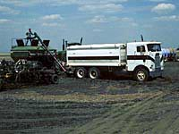

Seeding
Different implements (cultivator-harrow or cultivator-rodweeder combination; seeders such as disc drills, hoedrills, air seeders or discers with seeding attachments) are used for seeding, depending on the farming method. Farmers who direct seed into stubble (zero-till) use different equipment then those seeding into cultivated soil. Seeding implements open a furrow in the soil, drop the seed at an even depth of one to ten centimetres, cover it and pack the soil above it. Fertilizer is often placed with the seed. If the conditions are right, rows of green sprouts should appear within a week. Conditions for seeding can affect the germination of seeds and the start of a crop. Seeding requires a moist, fairly level seedbed, placing the seed at a proper soil depth, and placing a fertilizer, if it is applied, in the best position and distance from the seed.
How are seeds chosen?
The type of crop grown by a farmer depends mainly upon the conditions (soil, diseases, frost-free days...) of that area. Selection could be made from clean seed stocks which are on the farm or purchased from local grain handlers. Good looking seeds (plump, natural colour...) will usually show good vigour in their germination and early growth.
Certified seed is produced by registered seed growers under high standards and guaranteed to
- be genetically pure; seeds
are pure for the traits of their breed.
- have good
germination and high vigour, where seedlings begin growth quickly,
giving them a head start on weeds.
- be free from weeds and seeds of other varieties.
- be free from disease.
Non-certified seeds may require chemical treatments (fungicides, insecticides) if the species is susceptible to diseases or to pests. Legume seeds may be inoculated, for the rapid establishment of nitrogen-fixing bacteria in roots.
How is Seeding Accomplished?
Direct seeding (as in zero and minimum tillage operations) has required the modification of seeding techniques. Crop residue can make it difficult to penetrate the surface and/or to maintain the proper seeding depth across the entire width of the seeder. Seeds and fertilizers may be deposited during the same operation, and the placement of each is important to the success of the crop. Certain fertilizers can be deposited in the same furrow as the seed, simplifying designs and operations. Other fertilizers that can harm seeds if not banded to the sides or slightly below the seeds in a separate furrows.
Modern implements such as modified shovels or sweeps make the actual penetration into the soil and tubes deliver seeds and fertilizer. These machines accomplish the task of seeding into trash. The tubes are connected to a seed/fertilizer tank, which can be
either ahead or behind the tillage implement.
Directseeding
into heavy trash cover is generally done at a shallower depth
than conventional tillage and seeding. This takes advantage of
the warmer temperatures closer to the surface and speeds up germination.
If seeds are placed too deep, colder temperatures will delay germination
and increase the risk of diseases attacking seeds before germination.
It has also been found that plants starting from deeper seeds
tend to tiller less (produce fewer stems).
Many seeders have packers
following immediately behind the delivery ends, to lightly press
the soil over the seed. This encourages moisture to reach the
seed sooner and hastens germination.
Traditional seeding methods may include a harrowing operation, carried out a short time after seeding in order to level
the surface and set back weed growth.
Fertilization of Crops
Fertilizers have been used for centuries in agriculture. These substances add nutrients to the soil and help the plant to get a good start and grow with vigor. Fertilizers may be natural, or synthetic. Many farms make use of manure and gardeners may use compost, both are natural fertilizers. Chemical fertilizers consists of varying mixtures of nitrogen (one of the most needed macronutrients) and other elements.
Soil tests help determine the nutrients that may be
needed and therefore, the type of fertilizer required. Crop type, climate conditions and organic matter present in the soil will also affect the amount and type of fertilizer used.
There are various methods of applying fertilizers such as broadcasting (depositing on the surface) and banding (fertilzer is placed in the ground near the seed). Each method has its advantages and disadvantages. For example, in banding, fertilizer that is placed
too far away from the seed can reduce the chemical's availability and effectiveness. In colder, moist soils, phosphorus is not as accessible, so it should be placed fairly close to seeds. Phosphorus is important
as a nutrient because it accelerates root development. |